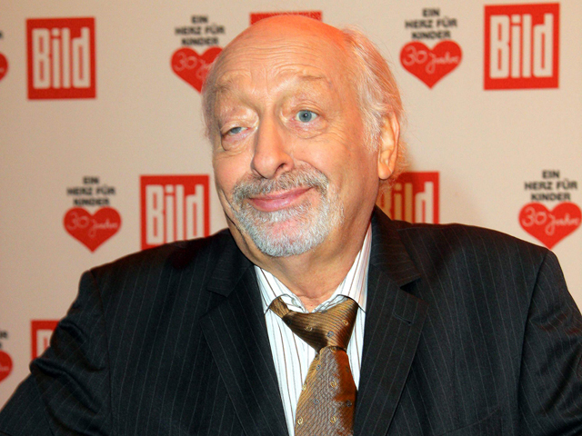
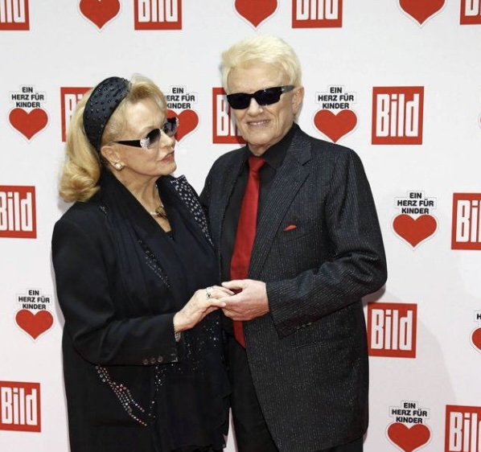
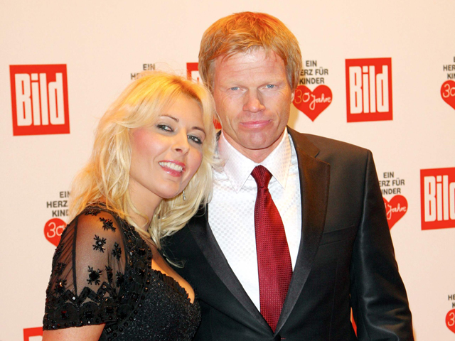

Wenn man eine Fernsehgala wie Ein Herz für Kinder im Fernsehen sieht, glaubt man, Prominente würden auch hinter der Bühne so wirken wie vor den Kameras: gestylt, kontrolliert und immer darauf bedacht, den perfekten Eindruck zu hinterlassen.
Nach meiner ersten Aftershow-Party wusste ich, dass das Unsinn ist.
2012 war ich zum ersten Mal dabei. Kurz zuvor hatte ich zusammen mit Thomas Gottschalk und Vitali Klitschko auf der Bühne gestanden und über unser Projekt für krebskranke Kinder aus der Ukraine gesprochen. Anschließend ging es hinüber zur Aftershow. Hilde, meine Schwester Marlene und ich betraten eine Welt, die wir bis dahin nur aus Illustrierten kannten.

Der erste, der mir auffiel, war Karl Dall. Er hatte sich bereits an der Bar eingerichtet und schien den Abend sehr entspannt anzugehen. Kurz darauf kam Boris Becker dazu. Sein Anzug war schon etwas verlottert, hinten hing das Hemd heraus, und man hatte nicht den Eindruck, dass dies sein erstes Bier des Abends gewesen war. Wenig später setzte sich Jenny Elvers zu den beiden. Die drei saßen beisammen wie alte Bekannte in einer Eckkneipe. Die Freigetränke fanden bei ihnen jedenfalls dankbare Abnehmer.

Ich war gerade dabei, drei Gläser Wein für Hilde, Marlene und mich zu holen, als mich plötzlich jemand ansprach. „Komm, wir trinken jetzt einen zusammen.“ Es war Heino. Also setzte ich mich mit meinen drei Gläsern zu ihm an den Tisch. Ich meine, Hannelore war ebenfalls dabei. Wir unterhielten uns eine ganze Weile über dies und das. Kein bedeutendes Gespräch, keine großen Erkenntnisse, sondern einfach ein netter Abend. Heino war ausgesprochen freundlich, hatte offensichtlich schon einen im Tee und war recht gut gelaunt. Er hatte offensichtlich Spaß daran, nach dem offiziellen Teil ganz normal mit anderen Menschen zusammenzusitzen.
Auch Gerit Kling lernte ich an diesem Abend näher kennen. Sie hatte unseren Auftritt gesehen und winkte mich zu sich herüber. Wir kamen schnell ins Plaudern. Sie erzählte von ihrer Tochter und zeigte mir sogar ein Foto. Ich berichtete von meinem Sohn Jan und zeigte ihr ein Foto von ihm. Sie war begeistert und meinte lachend: „Ist der aber hübsch. Vielleicht sollte sich meine Tochter in ihn verlieben?“ Wir könnten die beiden ja einmal miteinander bekannt machen. Wir hatten Spaß miteinander. Gerit sollte ich später noch mehrfach in unserer Kinderklinik wiedersehen.
Etwas enttäuscht war ich von Eckart von Hirschhausen. Er begrüßte mich freundlich mit einem „Hallo Herr Kollege“. Wir sind beide Kinderärzte. Ich erzählte ihm von unserer Kinderklinik und fragte, ob er nicht einmal mit seinen Zauberkunststücken zu uns kommen wolle. Für schwer kranke Kinder wäre das eine wunderbare Abwechslung gewesen. Er fand die Idee nett, geblieben ist es allerdings bei diesem Gespräch. Schade eigentlich. Die Kinder hätten ihn gemocht.
Mit Kai Diekmann unterhielt ich mich später ebenfalls eine ganze Weile. Er trug damals seinen auffallend langen Bart, und wir kamen über ganz unterschiedliche Themen ins Gespräch.
Ganz anders verlief meine Begegnung mit Guido Westerwelle. Er war zu dieser Zeit Außenminister und bewegte sich mit einigen Begleitern durch den Saal. Als ich ihn ansprach, hatte ich das Gefühl, eher zu stören. Jede Antwort fiel knapp aus, vieles wurde an Mitarbeiter delegiert. Er wirkte auf mich kühl und arrogant.
Jahre später sollte ich ihn noch einmal erleben. Da war er kein Außenminister mehr, sondern ein schwerkranker Mann, der selbst um sein Leben kämpfte. Ich erinnere mich noch gut daran, wie sehr sich dieser Mensch verändert hatte. Krankheit verändert eben nicht nur den Körper, sondern manchmal auch den Blick auf andere Menschen.

Eine Szene ist Hilde, Marlene und mir bis heute besonders im Gedächtnis geblieben. Udo Jürgens hatte offenbar ein Auge auf Simone, die damalige Frau von Oliver Kahn geworfen und ging zu ihr hinüber. Im selben Augenblick setzte sich ein ganzes Rudel Fotografen in Bewegung. Es war, als hätte jemand ein Startsignal gegeben. Von allen Seiten rannten sie auf die beiden zu, rempelten sich gegenseitig an und versuchten, das eine Foto zu bekommen, das am nächsten Tag überall zu sehen sein würde. Die Geschwindigkeit, mit der sich diese Traube bewegte, war fast beeindruckender als das Motiv selbst. Wir standen nur daneben und amüsierten uns über diesen Haufen Irrer. In diesem Moment waren nicht die Prominenten die Attraktion, sondern die Fotografen.
An diesem Abend wurde mir klar, wie unterschiedlich diese beiden Welten waren. Vor den Kameras entstand eine perfekt inszenierte Fernsehshow. Hinter den Kulissen saßen Menschen zusammen, tranken Wein oder Bier, erzählten von ihren Kindern oder machten alberne Witze. Manche waren sympathischer, als ich erwartet hatte, andere weniger. Aber fast alle wirkten ohne Kameras sehr viel normaler als im Fernsehen. Vielleicht war gerade das das Interessanteste an diesen Abenden.